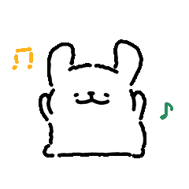

摄像头初始化中…
检测到 0 只手
🐶 玩法说明
伸出
食指 ☝️
，白狗会跟着你上下移动
左手食指
蓝色轨道
💙 / 右手食指
红色轨道
💗
按
空格
或点
⏸
可暂停 / 继续
🎵 背景音乐
boybee
happyfly
提示：上下慢慢挪，跟着鼓点节奏走～ 🎵
分数
0
连击
0
⏸
🐶💤
小狗们先歇会儿～
准备好了就继续接住它们吧
▶ 继续游戏
等待第一拍…
🐶
小狗们正在赶来…
连接 AI 模型中…
首次加载需下载约 13MB 模型，耐心等几秒哦 ✨
🎵 开始游戏
🎉
这一曲，落幕啦～
本局得分
0
最高连击
0
挑一首歌再来一局吧 🎵
🔁 再来一次